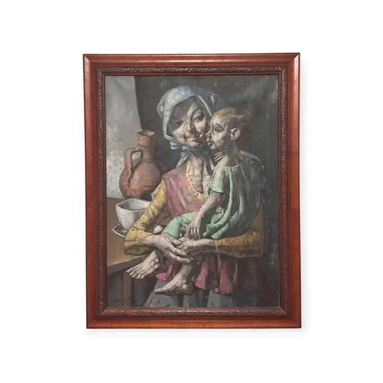
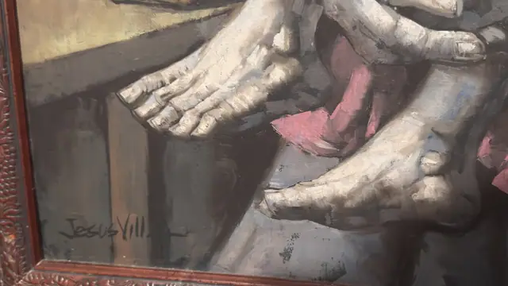
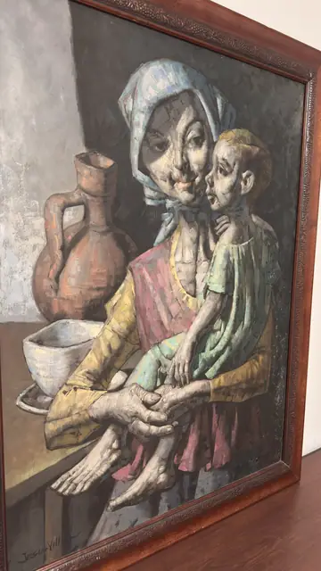
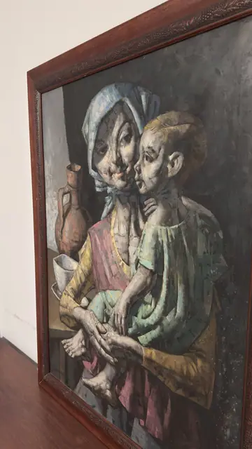

Paintings & Prints
Oil Painting of a Gaunt Mother and Child, Jesus Vill, Signed, Framed
Jesus Vill · mid to late 20th century
Price Upon Request




About the Item
Jesus Vill. A sombre figure painting in the social-realist manner: a hollow-cheeked woman in a pale blue headscarf sits close to the picture plane, a thin child pressed cheek to cheek against her, both painted with elongated limbs, heavy eyelids and blunt sculptural hands. She wears a mustard-yellow blouse over a rose-red skirt, the child a sea-green tunic, and their enormous pale hands and the child's bare feet are laid across the foreground in a knot at the centre. A terracotta jug and a white bowl stand on a ledge behind them against a bare grey-green wall. The paint is dry and scumbled with visible brush drag, the palette drab olive, grey and ochre lit by the two strong notes of yellow and red. It is set in a broad mahogany-toned frame with a carved grapevine inner band. Medium: oil on canvas. Signed lower left within the image, in dark paint, reading "Jesus Vill". Condition: Surface looks stable with no flaking or tears seen; a soft grey bloom or dust haze sits over the darks and there is glare from the room lights. Frame carving intact.
About the Artist
The signature likely corresponds to Jesus Villar (1930-2015), a Spanish painter born in Segura de la Sierra who died in Madrid, documented for somber figurative scenes of rural life with elongated gaunt figures, including mother and child subjects. The signature as recorded is incomplete, so this remains a probable rather than certain identification.
Details
- Creator:
- Jesus Vill
- Creation Year:
- mid to late 20th century
- Dimensions:
- Height: 37.0 in (93.98 cm)
Width: 28.0 in (71.12 cm)
outside of frame - Medium:
- oil on canvas
- Period:
- 20Th
- Condition:
- Offered in the condition shown in the photographs.
- Reference Number:
- VO-154
- Documentation:
- no certificate photographed